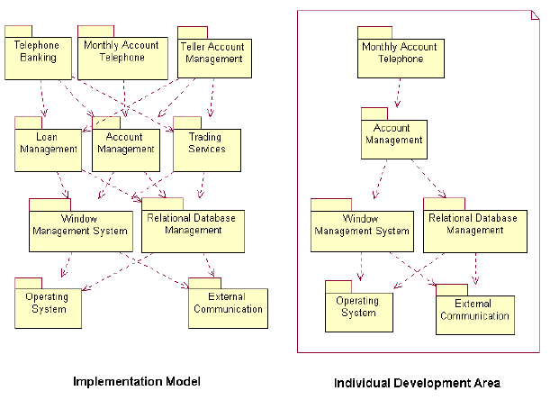
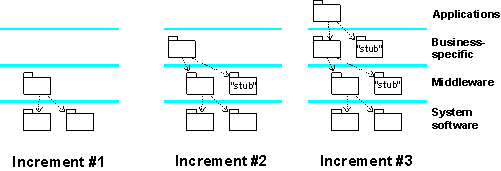

Concepts:
Development and Integration Workspaces
A system is typically implemented by teams of individual implementers working
together and in parallel. To make this possible, several workspaces are needed
such as:
Development
Workspace 
Individual implementers have a development workspace where they implement
the subsystems and the contained components for which they are responsible. To
compile, link, execute, and test the code in the subsystem, other parts of the
system are needed. Normally the implementers do not need the entire system to
develop their subsystem. It's usually enough to have the subsystems required to
compile, link, and execute the subsystem in the development workspace. These
other subsystems do not have to reside in any one implementer's private development
workspace as physical copies. Instead they can reside in a common repository
with the internally released subsystems. When implementers compile the
precise location of the other subsystems, it's defined in a separate file; for
example, a makefile.
Example:
The Monthly Account Telephone subsystem (in a banking system)
needs the subsystems that are directly or indirectly imported by the subsystem
to compile, link, and execute its components. In this case, six of the ten
subsystems will be needed for the implementers of the Monthly Account Telephone
subsystem.

The development workspace for implementers of the
subsystem Monthly Account Telephone
Integration
Workspace for the Team
At times there may be a team of implementers who simultaneously develop the same subsystem. In this
case implementers need to integrate
their components into a subsystem before it can be propagated on to system
integration. Team integration is often done in a subsystem integration
workspace dedicated to the integration of individual team member's
work. One team member acts as the integrator and is responsible for the integration
workspace and its performance.
Integration
Workspace for Integrators at the System Level
System integrators have an integration workspace where they can add one or
several software components or one or several subsystems at a time, thereby
creating
builds that are then integration tested.

An integration workspace for system integrators where
subsystems are added in each integration increment
Copyright
© 1987 - 2001 Rational Software Corporation
|  Disciplines >
Implementation >
Disciplines >
Implementation >
 Concepts >
Concepts >